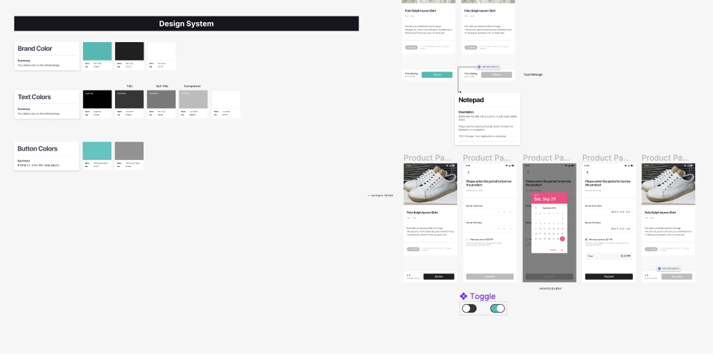
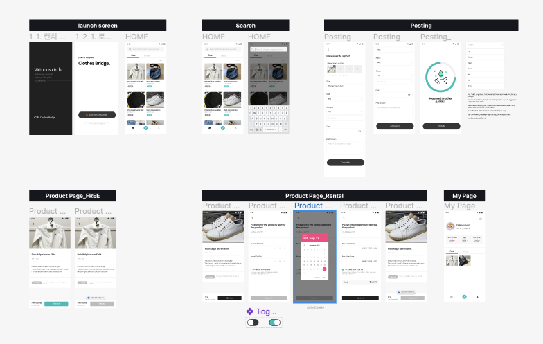

The Brief
The Bridge Hackathon (formally the East Asia GDSC Global Collab Hackathon) brought together Google Developer Student Club chapters from GDSC Waseda, GDSC Senshu, GDSC Keio, GDSC SWU, and KUGODS for one overnight sprint. Each team had to pick at least one UN Sustainable Development Goal and build a working solution around it using at least one Google product or service, then present it the following morning.
The Idea — ClothesBridge
Fast fashion is cheap because its environmental cost is hidden — carbon-heavy production, huge water use, and microplastic shedding that ends up landfilled or incinerated within a year or two of purchase. We set out to make it easier to keep clothes circulating instead of discarding them: a customer-to-customer trading and lending app, in the spirit of Korea's Danggeun Market (당근마켓), built specifically for clothes.
A pure peer-to-peer lending model has an obvious hole, though: moral hazard. If a borrower damages or fails to return an item, the lender has no recourse. So ClothesBridge doesn't just connect two users and step away — it inspects each item's condition before the handover and again afterward. If a discrepancy shows up — damage, loss, non-return — the party responsible is fined, and that fine both compensates the other party and funds the service itself.
How It Works
- A user lists an item to trade or lend, with photos and condition notes.
- ClothesBridge logs the item's condition before it changes hands.
- The item is exchanged directly between users, peer-to-peer.
- ClothesBridge checks the item's condition again after the trade or the loan period ends.
- If the condition doesn't match — moral hazard — the responsible party is fined; the fine compensates the other party and is how the service earns revenue.
Design Process
From a paper wireframe and information architecture to a working Android build in well under 24 hours — login, home feed, item posting, product detail, and profile.




Built With
Presentation & Estimated Impact
At the closing presentation, our team estimated the environmental impact ClothesBridge could offset by keeping clothes in use rather than discarded — modelling reductions in carbon emissions, water use, and microplastic shedding per item kept in circulation.

Figures are the team's own back-of-envelope estimate presented at the hackathon, not an independently audited measurement.
Recognition
Certificate of Participation, East Asia GDSC Global Collab Hackathon, February 11–12, 2023 — co-signed by the Korea and Japan head organizers of GDSC SWU, GDSC Senshu, GDSC Waseda, KUGODS, and GDSC Keio.